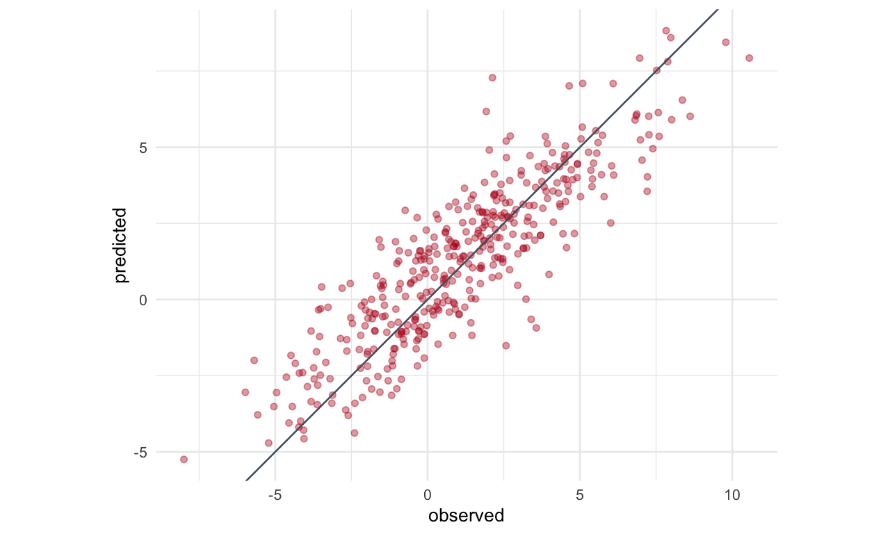
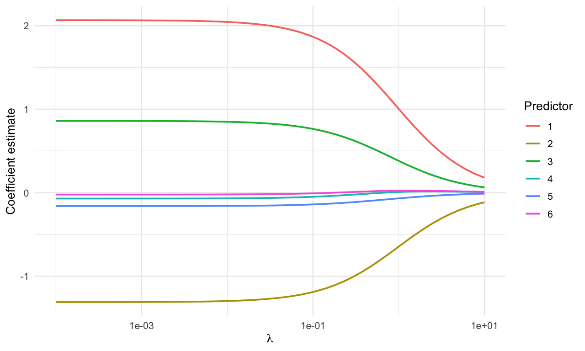
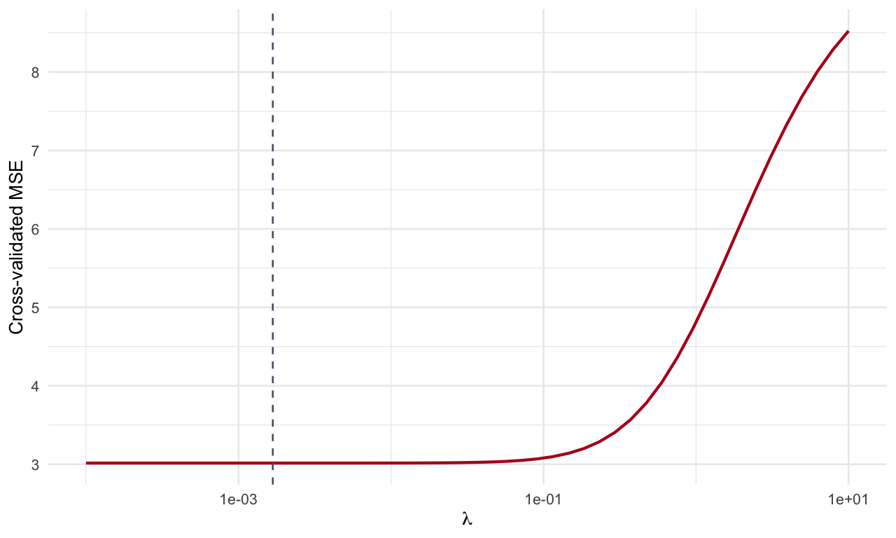
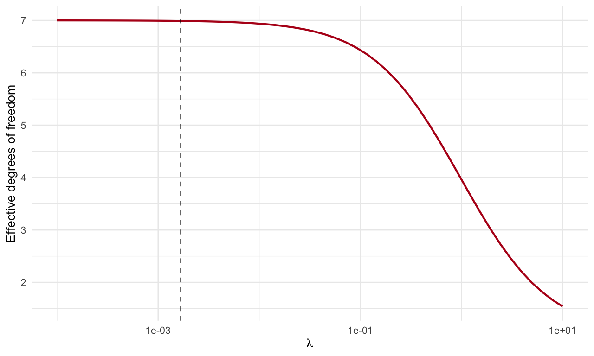

Least squares, ridge paths and model selection
The factors become statistically useful when they are connected to an estimation problem and to the predictions obtained from its solution. This chapter begins with ordinary least squares, where a coefficient vector can be checked against an independent QR fit, and then introduces ridge regularization. A ridge path shows how the estimates change with the penalty; cross-validation supplies a separate procedure for choosing among those candidate fits.
The construction of the design remains part of the model specification. These matrix interfaces do not insert an intercept or perform preprocessing automatically, so the examples make those choices explicit. Both ridge backends are checked against augmented-design QR calculations, allowing differences in model specification to be distinguished from differences between numerical implementations.
1 Least squares with predictions
Write the regression model as \(y=D\theta+\varepsilon\), where \(D=[\boldsymbol 1_n,X]\) includes an intercept and \(\theta=(\alpha,\beta^\top)^\top\). A direct thin factorization \(D=Q_D R_D\) gives the least-squares estimate through \(R_D\widehat\theta=Q_D^\top y\). The fitted values are \(D\widehat\theta\), while a new design with the same column definitions gives predictions \(D_{\mathrm{test}}\widehat\theta\).
The model-fitting interface used here, qrls(..., type = "QR"), solves a normalized cross-product system internally. The example therefore checks its coefficients against both a direct factorization of D and lm.fit(). On this well-conditioned design the three routes should agree to numerical precision; the accuracy chapter examines why their agreement on such an example does not establish identical numerical behavior near singularity.
We generate six predictors, of which three have nonzero coefficients, together with an intercept. Observation noise means that fitted coefficients need not equal their generating values exactly. The independent test observations are reserved for assessing prediction after the model has been fitted.
set.seed(2029)
n <- 160L
p <- 6L
n_test <- 400L
X <- matrix(rnorm(n * p), n, p)
X_test <- matrix(rnorm(n_test * p), n_test, p)
beta_true <- c(2, -1.5, .75, 0, 0, 0)
y <- drop(1 + X %*% beta_true + rnorm(n, sd = 1.5))
y_test <- drop(1 + X_test %*% beta_true + rnorm(n_test, sd = 1.5))
design <- cbind(intercept = 1, X)
design_test <- cbind(intercept = 1, X_test)
ols <- fastQR::qrls(y, design, X_test = design_test, type = "QR")
ols_factors <- fastQR::qr(design, complete = FALSE)
ols_projection <- crossprod(ols_factors$Q, y)
ols_explicit <- backsolve(ols_factors$R, ols_projection)
ols_derivation_error <- max(abs(ols$coeff - ols_explicit))
stopifnot(ols_derivation_error < 1e-10,
max(abs(ols$coeff - lm.fit(design, y)$coefficients)) < 1e-10)
knitr::kable(data.frame(
term = c("Intercept", paste0("x", seq_len(p))),
truth = c(1, beta_true), estimate = as.numeric(ols$coeff)), digits = 4)| term | truth | estimate |
|---|---|---|
| Intercept | 1.00 | 1.1081 |
| x1 | 2.00 | 2.0667 |
| x2 | -1.50 | -1.3108 |
| x3 | 0.75 | 0.8603 |
| x4 | 0.00 | -0.0704 |
| x5 | 0.00 | -0.1605 |
| x6 | 0.00 | -0.0224 |
ols_test_mse <- mean((y_test - drop(design_test %*% ols$coeff))^2)
ols_test_mse## [1] 2.238406The error on the independent test set estimates predictive performance; it is not the training residual variance. We compute the squared residual loss explicitly from predictions so that the quantity being reported is unambiguous.
Figure 2 compares the independent test responses with the predictions from the fitted model. The identity line represents exact prediction. Scatter around that line includes the new observation noise, so an accurate coefficient estimate does not make every test prediction coincide with its observed response.
ggplot2::ggplot(data.frame(observed = y_test,
predicted = drop(design_test %*% ols$coeff)),
ggplot2::aes(observed, predicted)) +
ggplot2::geom_point(alpha = .4, colour = "#b5121b") +
ggplot2::geom_abline(slope = 1, intercept = 0, colour = "#526070") +
ggplot2::coord_equal() + ggplot2::theme_minimal(base_size = 12)
Figure 2: Independent test responses versus least-squares predictions. The diagonal is a reference line, not a fitted trend.
2 Ridge: scaling the penalty and handling the intercept
For either backend of qrridge(), the coefficient vector solves \[
\widehat\beta_\lambda
=\arg\min_b\left\{\frac{1}{n}\|y-Xb\|_2^2+\lambda\|b\|_2^2\right\}
=(X^\top X+n\lambda I_p)^{-1}X^\top y.
\] Differentiating this criterion with respect to b gives \[
-\frac{2}{n}X^\top(y-Xb)+2\lambda b=0,
\] and hence the penalized system \((X^\top X+n\lambda I_p)\widehat\beta_\lambda=X^\top y\). A positive penalty adds curvature in every coefficient direction, making this system nonsingular even if the design has dependent columns. The inverse in the displayed expression describes the estimator mathematically; the implementations obtain it through factorizations and solves.
2.1 The two numerical routes
In the QR backend, define \(A_\lambda=X^\top X/n+\lambda I_p\) and \(h=X^\top y\). The routine factorizes \(A_\lambda=Q_A R_A\), forms \(Q_A^\top h/n\) and solves the upper triangular system with \(R_A\). The factorization is therefore of the normalized penalized system, rather than of X itself.
The R backend uses the augmented design \(\widetilde X=[X^\top,\sqrt{n\lambda}I_p]^\top\) to obtain a triangular factor \(\widetilde R\) satisfying \(\widetilde R^\top\widetilde R=X^\top X+n\lambda I_p\). The coefficients follow from \[
\widetilde R^\top c=h,\qquad
\widetilde R\widehat\beta_\lambda=c.
\] These routes have the same exact-arithmetic solution, while their intermediate factors have different meanings. The examples compare their coefficients with an independent augmented-design QR solve, rather than comparing their R entries as though they were the same factorization.
The factor n follows from normalizing the data loss by the number of observations. Replicating all observations leaves this criterion, and therefore the estimate at a fixed penalty, unchanged. In a validation fold the same convention uses the number of training observations, not the size of the full dataset.
2.2 Centering, scaling and coefficient interpretation
Here lambda is a scalar. We build a path by calling the function once per grid value. All supplied columns are penalized. To leave the intercept unpenalized, center the response and predictors, estimate the slopes, and reconstruct the intercept. We also scale predictors using training-set standard deviations so that a common penalty has a comparable interpretation across columns.
Let \(\bar x_j\) and \(s_j\) denote the training mean and standard deviation of predictor j, and define \(Z_{ij}=(X_{ij}-\bar x_j)/s_j\). Fitting the centered response on Z produces standardized coefficients \(\widehat\gamma_\lambda\). The original-scale slopes and intercept are recovered through \[ \widehat\beta_{\lambda,j}=\widehat\gamma_{\lambda,j}/s_j, \qquad \widehat\alpha_\lambda=\bar y-\sum_j\bar x_j\widehat\beta_{\lambda,j}. \] Thus a new prediction can be obtained either from the standardized design with the training means and scales, or from the original predictors with these recovered coefficients. The penalty acts on the standardized coefficients, which is why changing predictor units without an explicit scaling convention can change the fit.
x_mean <- colMeans(X)
x_scale <- apply(X, 2, sd)
y_mean <- mean(y)
Z <- sweep(sweep(X, 2, x_mean, "-"), 2, x_scale, "/")
y_centered <- y - y_mean
lambda <- exp(seq(log(1e-4), log(10), length.out = 50L))
path_standardized <- vapply(lambda, function(lam) {
as.numeric(fastQR::qrridge(y_centered, Z, lambda = lam, type = "QR")$coeff)
}, numeric(p))
path_triangular <- vapply(lambda, function(lam) {
as.numeric(fastQR::qrridge(y_centered, Z, lambda = lam, type = "R")$coeff)
}, numeric(p))
stopifnot(max(abs(path_standardized - path_triangular)) < 1e-10)
path_slopes <- sweep(path_standardized, 1, x_scale, "/")
path_intercept <- y_mean - drop(crossprod(x_mean, path_slopes))
# Independent augmented-design QR calculation at one grid value.
j <- 20L
reference <- qr.coef(base::qr(rbind(Z, sqrt(n * lambda[j]) * diag(p))),
c(y_centered, rep(0, p)))
stopifnot(max(abs(path_standardized[, j] - reference)) < 1e-10)The R-only calculation at one path value can also be checked directly from its returned triangular factor. The inner forwardsolve() reconstructs the response coordinates, and the following backsolve() returns the coefficients. The additional rows in the augmented QR reference contain zeros in the response because they encode only the penalty.
ridge_R_fit <- fastQR::qrridge(y_centered, Z, lambda[j], type = "R")
ridge_rhs <- crossprod(Z, y_centered)
ridge_coordinates <- forwardsolve(t(ridge_R_fit$R), ridge_rhs)
ridge_explicit <- backsolve(ridge_R_fit$R, ridge_coordinates)
ridge_manual_error <- max(abs(ridge_explicit - path_triangular[, j]))
stopifnot(ridge_manual_error < 1e-10)Figure 3 follows the fitted slopes as the penalty increases. Expressing the coefficients on the original predictor scale makes their statistical interpretation consistent with the data-generating model, while the logarithmic penalty axis reveals changes across several orders of magnitude. Agreement between the two numerical backends is checked before the paths are drawn.
path_table <- data.frame(lambda = rep(lambda, each = p),
coefficient = factor(rep(seq_len(p), length(lambda))),
estimate = as.vector(path_slopes))
ggplot2::ggplot(path_table, ggplot2::aes(lambda, estimate, colour = coefficient)) +
ggplot2::geom_line(linewidth = .8) + ggplot2::scale_x_log10() +
ggplot2::labs(x = expression(lambda), y = "Coefficient estimate", colour = "Predictor") +
ggplot2::theme_minimal(base_size = 12)
Figure 3: Ridge slopes on their original predictor scale, plotted against a logarithmic penalty grid. The coefficients change continuously with the penalty; ridge does not generally create an exactly sparse fit.
3 Cross-validation with preprocessing inside each fold
A coefficient vector at a fixed penalty minimizes training loss plus a penalty term. Choosing the penalty is a separate calculation, for which the relevant target is prediction on observations not used to obtain those coefficients. Divide the training sample into validation sets \(\mathcal V_1,\ldots,\mathcal V_K\), and let \(\mathcal T_k\) contain the remaining observations for fold k. A candidate penalty is fitted on \(\mathcal T_k\) and evaluated on \(\mathcal V_k\).
The explicit loop below records a squared prediction error for every validation observation and averages those errors across the full sample, \[ \mathrm{CV}(\lambda) =\frac{1}{n}\sum_{k=1}^K\sum_{i\in\mathcal V_k} \left(y_i-\widehat y_i^{(-k)}(\lambda)\right)^2. \] The same fold assignment is retained for every candidate penalty. Means, standard deviations and the response mean are estimated from \(\mathcal T_k\) alone, then applied to the held-out predictors. This reproduces the information available when predicting a genuinely new observation and prevents validation values from influencing the preprocessing used to fit that fold.
After selecting the smallest validation error, the final coefficient vector is taken from the path fitted on the full training sample. Its preprocessing uses the full training means and scales, as it should at this refitting stage. The independent test set remains outside both the fold calculations and the penalty selection.
set.seed(2030)
K <- 5L
fold <- sample(rep(seq_len(K), length.out = n))
squared_error <- matrix(NA_real_, n, length(lambda))
for (k in seq_len(K)) {
train <- fold != k
valid <- !train
mu <- colMeans(X[train, , drop = FALSE])
sc <- apply(X[train, , drop = FALSE], 2, sd)
ybar <- mean(y[train])
Z_train <- sweep(sweep(X[train, , drop = FALSE], 2, mu, "-"), 2, sc, "/")
Z_valid <- sweep(sweep(X[valid, , drop = FALSE], 2, mu, "-"), 2, sc, "/")
for (j in seq_along(lambda)) {
b <- fastQR::qrridge(y[train] - ybar, Z_train,
lambda = lambda[j], type = "QR")$coeff
prediction <- ybar + drop(Z_valid %*% b)
squared_error[valid, j] <- (y[valid] - prediction)^2
}
}
cv_mse <- colMeans(squared_error)
best <- which.min(cv_mse)
lambda_selected <- lambda[best]
selected_prediction <- path_intercept[best] + drop(X_test %*% path_slopes[, best])
knitr::kable(data.frame(
method = c("Least squares", "CV-selected ridge"),
test_MSE = c(ols_test_mse, mean((y_test - selected_prediction)^2))), digits = 4)| method | test_MSE |
|---|---|
| Least squares | 2.2384 |
| CV-selected ridge | 2.2378 |
lambda_selected## [1] 0.001676833The test responses are used only after selection. A single simulation need not favor ridge over least squares. Cross-validation chooses among the candidate penalties; it does not guarantee that the selected fit outperforms every alternative on new data. If the selected value lies at a grid endpoint, consider extending the grid.
The validation curve in Figure 4 summarizes the prediction loss over the candidate penalties. Its minimum identifies the value used for the final fit, with the dashed line locating that choice on the same grid. The curve concerns held-out prediction after fold-specific preprocessing; it is not the training loss minimized when estimating the coefficients.
ggplot2::ggplot(data.frame(lambda, MSE = cv_mse), ggplot2::aes(lambda, MSE)) +
ggplot2::geom_line(colour = "#b5121b", linewidth = .9) +
ggplot2::geom_vline(xintercept = lambda_selected, linetype = "dashed", colour = "#526070") +
ggplot2::scale_x_log10() + ggplot2::labs(x = expression(lambda), y = "Cross-validated MSE") +
ggplot2::theme_minimal(base_size = 12)
Figure 4: Validation mean squared error along the penalty grid. The dashed line marks the minimum on this grid.
4 Effective degrees of freedom along the ridge path
For a fixed design, fixed preprocessing and fixed \(\lambda\), ridge is linear in \(y\). If \(d_j\) are the singular values of the centered, standardized design \(Z\), the effective degrees of freedom including the unpenalized intercept are \[ \mathrm{df}(\lambda)=1+\sum_{j=1}^p\frac{d_j^2}{d_j^2+n\lambda}. \] To see where this expression comes from, write the thin singular value decomposition \(Z=U_Z D_Z V_Z^\top\), with diagonal entries \(d_j\) in \(D_Z\). For the centered response \(y_c=y-\bar y\boldsymbol 1_n\), the centered fitted values are \[ \widehat y_c =H_\lambda y_c,\qquad H_\lambda =U_Z\operatorname{diag}\left(\frac{d_j^2}{d_j^2+n\lambda}\right)U_Z^\top. \] Each orthogonal data direction therefore contributes a shrinkage multiplier \(d_j^2/(d_j^2+n\lambda)\) to the fitted-value map. The trace of this matrix is the sum of those multipliers. Because Z has centered columns, the separate intercept adds the projection onto the constant direction and contributes one additional degree of freedom.
For a full-column-rank Z, the total approaches \(p+1\) as the penalty tends to zero and approaches one as it tends to infinity. These limits describe the unpenalized fit and the intercept-only limit. They do not require every coefficient on the original predictor scale to decrease monotonically when predictors are correlated.
The code computes this fixed-penalty trace explicitly, rather than reading the package’s legacy residual-dimension field df. Substituting a penalty selected from the responses locates a fit on the curve, but the trace of that candidate alone does not include the additional response dependence of the selection rule.
Figure 5 expresses the same regularization path in terms of effective model complexity. Increasing the penalty reduces the contribution of each penalized direction, while the unpenalized intercept contributes one degree of freedom throughout. The dashed line locates the selected penalty without incorporating the additional response dependence of the selection procedure into this fixed-penalty formula.
d2 <- svd(Z, nu = 0, nv = 0)$d^2
df_path <- vapply(lambda, function(lam) 1 + sum(d2 / (d2 + n * lam)), numeric(1))
stopifnot(all(diff(df_path) <= 0), all(df_path >= 1), all(df_path <= p + 1))
ggplot2::ggplot(data.frame(lambda, df = df_path), ggplot2::aes(lambda, df)) +
ggplot2::geom_line(colour = "#b5121b", linewidth = .9) + ggplot2::scale_x_log10() +
ggplot2::geom_vline(xintercept = lambda_selected, linetype = "dashed") +
ggplot2::labs(x = expression(lambda), y = "Effective degrees of freedom") +
ggplot2::theme_minimal(base_size = 12)
Figure 5: Effective degrees of freedom for each fixed ridge penalty, including the unpenalized intercept. The dashed line marks the cross-validated penalty; the curve describes fixed-penalty fits.
5 Multiple responses
With \(Y\in\mathbb R^{n\times q}\), the model has a coefficient matrix \(B\in\mathbb R^{p_D\times q}\), where \(p_D\) is the number of columns in the supplied design D. The least-squares loss is \(\|Y-DB\|_F^2\), the sum of the q response-specific squared losses. A direct factorization \(D=Q_D R_D\) yields \[
C=Q_D^\top Y,\qquad R_D\widehat B=C.
\] The columns of C are projected response vectors. One triangular factor is reused to solve for all coefficient columns, so the common design does not need to be factorized separately for each outcome. The example checks qrmls() against both that direct calculation and a base-R QR fit.
set.seed(2031)
Y <- cbind(y, drop(-.5 + X %*% c(0, 1, 0, -1, 0, .5) + rnorm(n)))
multivariate <- fastQR::qrmls(Y, design, type = "QR")
reference <- qr.coef(base::qr(design), Y)
multi_direct <- backsolve(ols_factors$R, crossprod(ols_factors$Q, Y))
multi_direct_error <- max(abs(multivariate$coeff - multi_direct))
stopifnot(multi_direct_error < 1e-10,
max(abs(multivariate$coeff - reference)) < 1e-10)
knitr::kable(as.matrix(multivariate$coeff), digits = 4,
col.names = c("Response 1", "Response 2"))| Response 1 | Response 2 |
|---|---|
| 1.1081 | -0.5143 |
| 2.0667 | -0.0096 |
| -1.3108 | 1.1742 |
| 0.8603 | -0.0503 |
| -0.0704 | -0.9931 |
| -0.1605 | -0.0918 |
| -0.0224 | 0.2954 |
6 Native cross-validation on a supplied design
The packaged interfaces select a penalty for the design matrix supplied to them. They do not center the response, standardize predictors within folds or treat a column of ones separately. Consequently, the following fit penalizes the intercept column in design. It answers a different model-selection question from the preceding example, where preprocessing is repeated within each fold and the intercept is unpenalized.
The native interfaces generate random folds from the supplied seed, and return their labels rather than accepting a user-supplied fold assignment. The independent simulated observations used here match that resampling setup. An explicit validation loop leaves the training and validation sets under the analyst’s control when a different prediction design is required, such as a chronological split of ordered observations.
Each training fit minimizes its own normalized loss, with the number of training observations multiplying the penalty in the normal equations. The returned foldid makes the split explicit. The reported curve averages held-out squared errors equally across folds; when fold sizes differ, this need not equal a pooled average across all validation observations.
native_qr <- fastQR::qrridge_cv(y, design, lambda, k = 5L, seed = 2032L,
X_test = design_test, type = "QR")
native_r <- fastQR::qrridge_cv(y, design, lambda, k = 5L, seed = 2032L,
X_test = design_test, type = "R")
stopifnot(identical(native_qr$foldid, native_r$foldid),
max(abs(native_qr$mse - native_r$mse)) < 1e-10,
max(abs(native_qr$coeff - native_r$coeff)) < 1e-10)
# Reconstruct the entire validation curve independently.
native_reference_mse <- vapply(lambda, function(lam) {
mean(vapply(sort(unique(native_qr$foldid)), function(k) {
train <- native_qr$foldid != k
valid <- !train
nt <- sum(train)
A <- rbind(design[train, , drop = FALSE],
sqrt(nt * lam) * diag(ncol(design)))
b <- qr.coef(base::qr(A), c(y[train], rep(0, ncol(design))))
mean((y[valid] - drop(design[valid, , drop = FALSE] %*% b))^2)
}, numeric(1)))
}, numeric(1))
stopifnot(max(abs(as.numeric(native_qr$mse) - native_reference_mse)) < 1e-10)
knitr::kable(data.frame(
backend = c("QR", "R"),
selected_lambda = c(native_qr$lambda_min, native_r$lambda_min),
validation_MSE = c(native_qr$mse_min, native_r$mse_min),
test_MSE = c(mean((y_test - native_qr$predicted)^2),
mean((y_test - native_r$predicted)^2))), digits = 5,
caption = "Native cross-validation with a penalized intercept column.")| backend | selected_lambda | validation_MSE | test_MSE |
|---|---|---|---|
| QR | 0.02223 | 2.87428 | 2.22877 |
| R | 0.02223 | 2.87428 | 2.22877 |
The final coefficients are estimated again on the full training sample at the selected penalty. The mse_min_ind field retains a zero-based index for compatibility; lambda_min gives the selected value directly. For the R backend, an explicit orthogonal factor is neither needed nor returned.
7 Ridge with multiple responses
Ridge retains the shared-system structure for several outcomes. Differentiating \(\|Y-DB\|_F^2/n+\lambda\|B\|_F^2\) gives \[ (D^\top D+n\lambda I_{p_D})\widehat B_\lambda=D^\top Y. \] The right-hand side has q columns; each is processed using the same penalized factorization. The augmented reference stacks \(\sqrt{n\lambda}I_{p_D}\) below D and a \(p_D\times q\) zero matrix below Y, turning the penalized calculation into ordinary multivariate least squares.
The native validation score averages squared prediction errors over held-out rows and response columns within each fold, then averages the fold scores. Averaging over responses multiplies their summed prediction loss by the fixed factor \(1/q\), which does not change the ordering of candidate penalties for that response set. Different response units still change the relative contribution of the outcomes, so any desired response scaling must be specified explicitly and fitted within the training portions of the validation procedure.
multi_qr <- fastQR::qrmridge_cv(Y, design, lambda, k = 5L, seed = 2032L,
X_test = design_test, type = "QR")
multi_r <- fastQR::qrmridge_cv(Y, design, lambda, k = 5L, seed = 2032L,
X_test = design_test, type = "R")
A <- rbind(design, sqrt(n * multi_qr$lambda_min) * diag(ncol(design)))
B_reference <- qr.coef(base::qr(A), rbind(Y, matrix(0, ncol(design), ncol(Y))))
stopifnot(max(abs(multi_qr$coeff - B_reference)) < 1e-10,
max(abs(multi_r$coeff - B_reference)) < 1e-10,
max(abs(multi_qr$mse - multi_r$mse)) < 1e-10,
max(abs(multi_qr$predicted - design_test %*% B_reference)) < 1e-10,
!anyDuplicated(names(multi_qr)), !anyDuplicated(names(multi_r)))
knitr::kable(data.frame(
backend = c("QR", "R"),
selected_lambda = c(multi_qr$lambda_min, multi_r$lambda_min),
validation_MSE = c(multi_qr$mse_min, multi_r$mse_min),
maximum_coefficient_error = c(max(abs(multi_qr$coeff - B_reference)),
max(abs(multi_r$coeff - B_reference)))),
digits = 6, caption = "Multiple-response ridge checked against an independent QR fit.")| backend | selected_lambda | validation_MSE | maximum_coefficient_error |
|---|---|---|---|
| QR | 0.028118 | 2.020752 | 0 |
| R | 0.028118 | 2.020752 | 0 |
The cross-products are available as XTX and XTY; XTy is retained as an alias of XTY. The returned df field is a legacy residual-dimension diagnostic, rather than the effective ridge degrees of freedom derived earlier. Likewise, residual variance and covariance estimates divided by n-p are diagnostics, not unbiased ridge variance estimators.